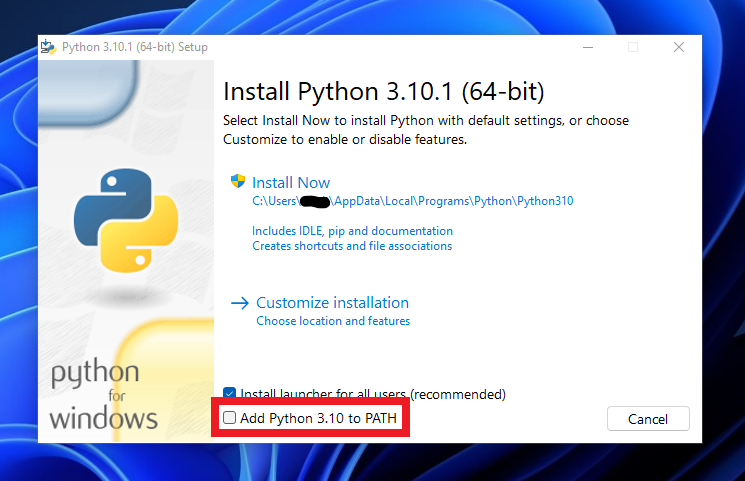
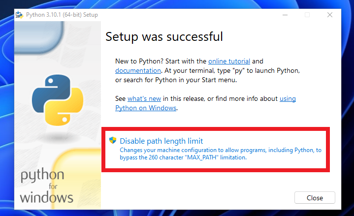

Hallo.
wir möchten den NAT Typ von 3 auf 2 ändern, um auf der PS4 Fifa spielen zu können.
Wir haben bereits mehrmals bei der Hotline angerufen, bekommen allerdings immer nur die gleiche Anleitung geschickt, die einfach nicht hilft. Das Profil haben wir geändert.
Wir können bei der Port Weiterleitung keine „von bis“ Ports eingeben!!
Die Kundenberater am Telefon wissen keine Lösung.
Wir haben eine Klax Prepaid Karte und nutzen einen Alcatel Router aus dem Jahr 2018 (HH40V).
Viele Grüße
Hallo @csupertramp und willkommen in der Magenta Community,
Wurde schon versucht den APN auf business.gprsinternet zu ändern?
LG
Rexalius
Hi, ja die APN haben wir unter Profil und „neu“ schon nach der vorhandenen Beschreibung geändert. Es scheiterte daran, dass wir unter „NAT“ und Port „Weiterleitung“ nur einzelne Ports eingeben konnten. Für Fifa 22 benötigen wir aber zum Beispiel 10000-10099. Dafür gibt es in unserem Menü aber kein Eingabefeld.
Hey @Csupertramp
Welche Softwareversion ist auf dem HH40V installiert?
Diese Angabe ist unter System -> Geräteinfo zu finden.
Ist außerdem UPnP aktiv?
Diese Einstellung ist unter Einstellungen -> NAT -> UPnP zu finden.
LG NTM
UPnP ist aktiv.
Die Softwareversion ist HH40_EP_02.00_14
Allerdings haben wir es heute auch mit einem anderen Router versucht (Huawei) und es war trotzdem nur NAT 3 möglich.
Es muss an der Klax Prepaid Karte liegen?!
vor 4 Stunden schrieb Csupertramp:Allerdings haben wir es heute auch mit einem anderen Router versucht (Huawei) und es war trotzdem nur NAT 3 möglich.
Es muss an der Klax Prepaid Karte liegen?!
Nein es geht auch mit der Klax Wertkarte das ist nicht das Thema.
Wurde der Huawei Router neu gestartet nach dem Ändern des APN?
Ist der angelegte APN auch aktiv (als Standard festgelegt)?
Könntest du außerdem Screenshots von den APN Einstellungen teilen?
vor 4 Stunden schrieb Csupertramp:Die Softwareversion ist HH40_EP_02.00_14
Der Alcatel HH40 hatte zu Beginn den Fehler, dass NAT Typ 2 damit nicht möglich war.
Leider weiß ich aber nicht mit welcher Softwareversion bei der Magenta Edition des Routers dies gelöst sein sollte.
Also wenn möglich aktualisieren.
Hi NTM,
die Systemsoftware ist bereits die aktuelle. Wir haben den Router bereits aktualisiert.
Die APN steht auf Standard. Ich kann meinen Freund gleich fragen, ob er einen Screenshot machen kann, ich selbst hab gerade keinen Zugriff auf das Menü.
Es klappt aber auch nicht, wenn wir die SIM in ein Smartphone machen und von da aus einen Hotspot legen.
Man hat uns in der Hotline gesagt, Magenta müsse irgendwas bei uns „freischalten“, damit wir „von bis“ Ports eingeben können. Oder wir sollen uns einen Vertrag machen. Das ist aber unsinnig für uns, da wir das Internet vor Ort nur bis April brauchen. Und alle Verträge haben laut Homepage eine Bindung von 24 Monaten…
Mit NAT 3 ist die Wertkarte für die PS4 leider unbrauchbar.
Wir wissen nicht mehr weiter.
EDIT: Im Anhang einige Screenshots. Vielleicht kann jemand helfen.
Bearbeitet von Csupertramp
Hey
@Csupertramp
An sich gäbe es nichts was Magenta am Router freischalten könnte.
Die Software vom Router erlaubt es einfach nicht so viele Ports manuell freizugeben.
Eigentlich sollte dies in der Regel über UPnP laufen (automatische Portweiterleitung).
Der APN sieht richtig aus und es sollte auch eine öffentliche IP sein.
Ich hatte noch vor wenigen Monaten einen Klax 30 mal im Einsatz. Da war es mit mehreren Routern kein Problem auf NAT Typ moderat/2 zu kommen.
Bei einem Smartphone sollte es, mit dem Business APN, auf jeden Fall funktionieren.
Hast du es auch mit der DMZ mal versucht?
Du könntest auch eine neue Klax 30 Sim besorgen, um Probleme mit der aktuellen auszuschließen. Diese gibt es nun auch bei Billa, Bipa und Libro, sowie in Magenta Shops und Magenta Partner-Shops.
Ich habe noch Ideen, um das Problem weiter einzugrenzen.
Ich melde mich damit im Laufe des Tages hier.
LG NTM
Hi,
wir hatten vorher eine Klax 30, danach haben wir erst die Klax 70 gekauft, weil wir dachten, evtl klappt es damit. Aber mit beiden Wertkarten bekommen wir nur NAT 3. 😭
Wir überlegen schon, ob wir einen anderen Anbieter ausprobieren sollen. Bob oder so etwas. Aber wir wollen auch nicht unnötig Geld ausgeben, wenn es dann am Ende doch wieder nicht klappt.
Versuchen wir das Problem mal zu vereinfachen.
Es kann sein, dass die IP nicht "echt öffentlich" oder es kann Probleme mit Portweiterleitungen geben.
Auch kann irgendetwas zwischen dem Router und der PS4 nicht hinhauen.
Prüfen wir mal, mit einer anderen Anwendung, ob Portweiterleitung und öffentliche IP general funktionieren.
Versuchen wir es mit einem sehr einfachen Webserver.
Diese Anleitung gilt unter Windows:
Installiere dazu die neueste Version von Python (Programmiersprache).
Solltest du etwas mit Python-Programmierung gemacht haben, und daher Python bereits installiert haben, sollte jede 3.x Version funktionieren.
Wenn du es nicht installiert hast, bitte hier herunterladen (noch nicht installieren erst die nächsten Schritte lesen):
https://www.python.org/downloads/
Beim Installationsprogramm auf der ersten Seite die Checkbox "Add Python to PATH" aktivieren und dann erst "Install Now" anklicken.

Bitte die Windows Sicherheitsabfrage bestätigen, um mit der Installation fortzufahren.
Nach der Installation noch "Disable path length limit" anklicken". Diese Option vermeidet Probleme bei langen Dateipfaden.

Bitte das Gerät nun einmal neu starten.
Als nächstes lade bitte das folgende Zip Archiv herunter und entpacke dieses. Ich habe es in einem privaten Discord-Server von mir hochgeladen, da ich hier im Forum keine ZIP Archive hochladen kann. Discord ist eine Kommunikationsplattform mit vielen verschiedenen virtuellen Server. Es ist kein Login oder Registrierung für den Download nötig:
https://cdn.discordapp.com/attachments/384798823827898371/930939507560284180/webserver.zip
In diesem Ordner befinden sich zwei Dateien.
Die server.bat, welche einen sehr einfachen Webserver startet. Du kannst den Inhalt der Datei auch mit rechtsklick -> Bearbeiten ansehen.
Die index.html ist eine einfache Textdatei. Wegen dem Namen wird diese Datei von dem Webserver als Startseite erkannt. Du kannst den Inhalt der Datei mit rechtsklick -> Öffnen mit -> Editor ansehen.
Öffne nun die server.bat mit einem Doppelklick. Bitte die Windows Sicherheitsabfrage bestätigen, damit der Server im Netzwerk verfügbar ist.
Nun kannst du in einem Webbrowser am PC mit localhost:8000 auf den Webserver zugreifen.
Du solltest dann "hello world! Du hast Zugriff auf den Server!" lesen können.
Von einem anderen Gerät im selben W-Lan/Lan Netz kannst du den Webserver mit der IP-Adresse deines PC und der Angabe des Port 8000 ansteuern. z.B.192.168.1.55:8000
Um nun zu testen, ob du von außerhalb deines Netzes auf den Webserver zugreifen kannst, als erstes eine Portweiterleitung für den PC einrichten. Als LAN-IP-Adresse eben jene deines PC, als Lan & Wan Port 8000 und als Protokoll TCP.
Nun solltest du mit der IP-Adresse, welche der Router auf der Startseite unter Status -> Internet anzeigt und dem Port 8000 von außen auf den Webserver zugreifen können. Die Tests bitte wirklich von außerhalb des Netzwerks durchführen! Also W-Lan am Handy deaktivieren und darüber testen. Sonst bringt dies nichts!
Wenn dies funktioniert, sind Portweiterleitung und öffentliche IP funktionsfähig.
Hoffentlich kann man das Problem damit weiter eingrenzen.
Bearbeitet von NTM{kind=link}
{kind=link}
{kind=link}
{kind=link}
{kind=link}
{kind=link}
{kind=link}